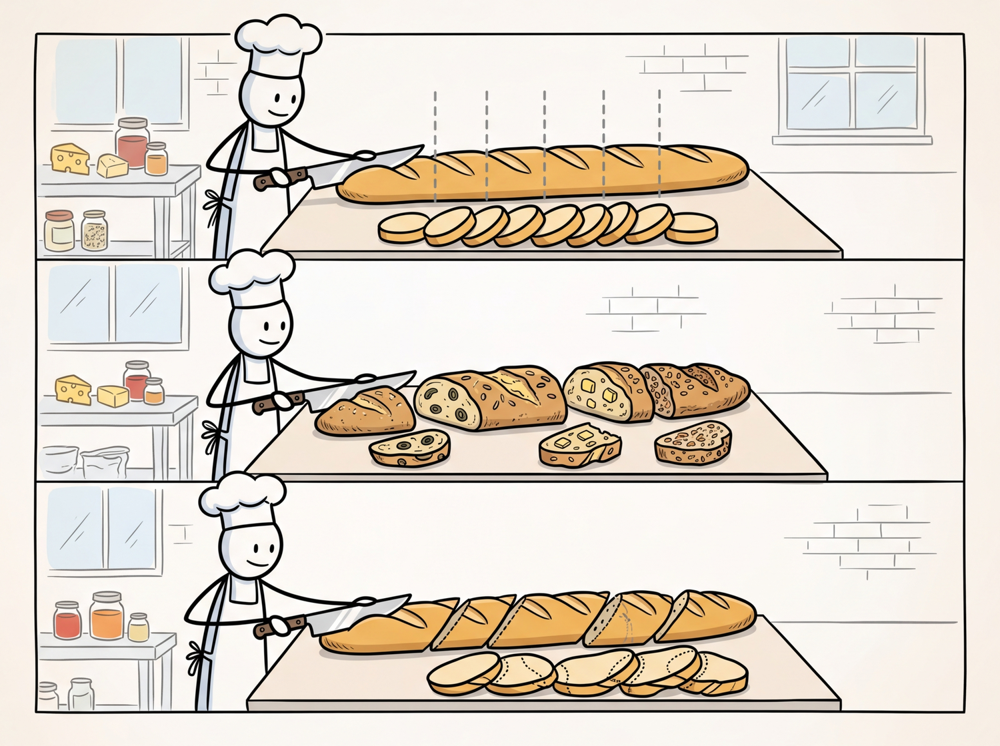

Garbage in, garbage out. But with chunking, it is more like: split wrong, retrieve wrong, answer wrong.
Vec, Slice-Savvy AI Agent
The quality of your RAG system is bounded by the quality of your chunks. No embedding model or vector database can compensate for poorly chunked documents. If a relevant answer spans two chunks that were split in the wrong place, the retriever will never surface it as a single coherent result. Document processing and chunking is where most RAG systems succeed or fail, yet it receives far less attention than model selection or index tuning. This section covers chunking strategies from basic to advanced, document parsing tools for complex formats, and the engineering of production-grade ingestion pipelines. The tokenization concepts from Section 2.1 directly inform chunk size decisions, since models have fixed token-level context windows.
Prerequisites
Effective chunking depends on understanding what embedding models expect as input, so review the embedding model fundamentals in Section 17.1 before proceeding. The tokenization concepts from Section 2.1 are directly relevant because chunk boundaries interact with token limits. This section feeds directly into the RAG pipeline design covered in Section 18.1, where chunking quality determines retrieval quality.

17.4.1 The Document Processing Pipeline
Before text can be embedded and indexed, raw documents must pass through a multi-stage processing pipeline. Each stage introduces potential failure modes that can degrade retrieval quality downstream. outlines the complete ingestion pipeline from raw files to indexed vectors.
- Loading: Reading raw files from various sources (file systems, S3, URLs, databases, APIs).
- Parsing: Extracting text and structure from complex formats (PDF, DOCX, HTML, slides, scanned images).
- Cleaning: Removing headers, footers, page numbers, boilerplate, and artifacts from parsing.
- Chunking: Splitting cleaned text into segments suitable for embedding and retrieval.
- Enrichment: Adding metadata (source, page number, section title, date) to each chunk.
- Embedding: Converting chunks to vectors using the selected embedding model.
- Indexing: Storing vectors and metadata in the vector database.
The chunking problem in document processing is, at its core, a segmentation problem with deep roots in psycholinguistics and information theory. George Miller's seminal 1956 paper "The Magical Number Seven" showed that human working memory processes information in "chunks," and that the boundaries between chunks are determined by semantic coherence, not arbitrary length. The same principle applies to RAG: chunks that align with natural discourse boundaries (paragraphs, sections, topic shifts) produce better retrieval results than chunks split at arbitrary token counts. Linguists study this under the name "discourse segmentation" or "topic modeling," and the computational approaches (TextTiling by Hearst, 1997; Bayesian topic segmentation by Eisenstein and Barzilay, 2008) predate RAG by decades. Semantic chunking strategies in modern RAG systems are rediscovering these linguistic principles: the best chunk boundary is where the topic changes, which is precisely where human readers would naturally pause and begin processing a new idea.
17.4.2 Document Parsing
The PDF Challenge
PDFs are the most common and most difficult document format for RAG systems. A PDF is fundamentally a page layout format, not a text format. Text is stored as positioned glyphs on a page, with no inherent reading order, paragraph structure, or semantic hierarchy. Tables, multi-column layouts, headers, footers, and embedded images all require specialized handling. Scanned PDFs contain only images, requiring OCR before text extraction is even possible. For an alternative approach that skips text extraction entirely, see Section 17.5 on vision-based document retrieval.
Parsing Tools
Before investing time in parsing optimization, test your documents with the simplest tool first. Run PyPDF on a sample of 20 documents and manually inspect the output. If 80% parse cleanly, you may only need a specialized parser for the remaining 20%. Many teams over-engineer their parsing pipeline for edge cases that represent a tiny fraction of their corpus.
- PyPDF / pdfplumber: Basic Python libraries for text extraction from digital PDFs. Fast and lightweight, but struggle with complex layouts, tables, and multi-column text.
- Unstructured.io: An open-source library that combines multiple parsing backends (tesseract OCR, detectron2 layout detection) to handle diverse document types. Identifies elements like titles, narrative text, tables, and images with layout-aware processing.
- LlamaParse: A cloud-based document parsing service from LlamaIndex that uses LLMs to understand document structure. Excels at tables, charts, and complex layouts but introduces latency and API costs.
- Docling: An open-source document parser from IBM that uses vision models for layout analysis. Handles PDFs, DOCX, PPTX, and HTML with high-fidelity structure extraction.
# Document parsing with Unstructured.io
from unstructured.partition.pdf import partition_pdf
# Parse a PDF with layout detection
elements = partition_pdf(
filename="technical_report.pdf",
strategy="hi_res", # Use layout detection model
infer_table_structure=True, # Extract table structure
include_page_breaks=True, # Track page boundaries
)
# Inspect extracted elements
for element in elements[:10]:
print(f"Type: {type(element).__name__:20s} | "
f"Page: {element.metadata.page_number} | "
f"Text: {str(element)[:60]}...")
# Filter by element type
from unstructured.documents.elements import Title, NarrativeText, Table
titles = [e for e in elements if isinstance(e, Title)]
text_blocks = [e for e in elements if isinstance(e, NarrativeText)]
tables = [e for e in elements if isinstance(e, Table)]
print(f"\nExtracted: {len(titles)} titles, "
f"{len(text_blocks)} text blocks, "
f"{len(tables)} tables")17.4.3 Chunking Strategies
Chunk size involves a fundamental tradeoff. Smaller chunks (100 to 200 tokens) produce more precise embeddings because each chunk covers a single topic, improving retrieval precision. However, they may lack sufficient context for the LLM to generate a good answer. Larger chunks (500 to 1000 tokens) provide more context but may cover multiple topics, reducing embedding precision and retrieval recall. Most production systems settle on 256 to 512 tokens as a baseline, then tune based on evaluation results.
Developers often assume that smaller chunks improve retrieval because each chunk covers a narrower topic. While this is true for embedding precision, it ignores two critical failure modes. First, when an answer spans two small chunks split at the wrong boundary, neither chunk contains the complete answer, and the retriever may surface only one half. Second, small chunks strip away surrounding context that the LLM needs to interpret the passage correctly. A 100-token chunk saying "the rate increased to 3.5%" is useless without knowing which rate, in which time period. Chunk size must be tuned empirically on your data, not chosen from a general rule. Start at 400 to 512 tokens with 50-token overlap, then use retrieval evaluation metrics (covered in Chapter 27) to find the optimum for your corpus.
Ask ten RAG engineers for their optimal chunk size and you will get twelve answers. The chunking literature is littered with benchmarks "proving" that 256, 512, or 1024 tokens is best, usually on completely different datasets. The real answer is always "it depends," which is the most frustrating and most honest thing in engineering.
Fixed-Size Chunking
Chunk Overlap Geometry.
For a document of length D tokens, chunk size C, and overlap O:
$$Number of chunks: N = \lceil(D - O) / (C - O)\rceil$$Effective stride: stride = C - O
Overlap ratio: O / C (typically 10% to 20%)
Storage overhead from overlap: (N × C) / D = C / (C - O)
Worked example: A 10,000-token document with C = 512, O = 50:
$$\begin{aligned}stride &= 512 - 50 = 462 \\ N &= \lceil(10000 - 50) / 462\rceil = \lceil21.5\rceil = 22 chunks\end{aligned}$$Storage overhead: 512 / 462 = 1.11 × (11% more vectors than zero-overlap chunking).
$$\text{With zero overlap: } \lceil 10000 / 512 \rceil = 20 \text{ chunks}$$The extra 2 chunks ensure no sentence split at a boundary is lost.
The simplest approach splits text into chunks of a fixed number of characters or tokens. While naive, fixed-size chunking is fast, deterministic, and serves as a reasonable baseline.
# Fixed-size chunking with overlap
from typing import List
def fixed_size_chunk(
text: str,
chunk_size: int = 500,
chunk_overlap: int = 50
) -> List[str]:
"""
Split text into fixed-size chunks with overlap.
Args:
text: Input text to chunk
chunk_size: Maximum characters per chunk
chunk_overlap: Characters to overlap between consecutive chunks
"""
chunks = []
start = 0
while start < len(text):
end = start + chunk_size
# If not the last chunk, try to break at a sentence boundary
if end < len(text):
# Look for sentence boundary near the end
for boundary in [". ", ".\n", "? ", "! "]:
last_boundary = text[start:end].rfind(boundary)
if last_boundary > chunk_size * 0.5:
end = start + last_boundary + len(boundary)
break
chunk = text[start:end].strip()
if chunk:
chunks.append(chunk)
# Move start position, accounting for overlap
start = end - chunk_overlap
return chunks
# Example
sample_text = """
Vector databases are specialized systems designed for storing and querying
high-dimensional vectors. They use approximate nearest neighbor algorithms
to find similar vectors efficiently.
The most common algorithm is HNSW, which builds a multi-layer graph structure.
Each layer connects vectors to their nearest neighbors, enabling fast navigation
from any starting point to the target region of the vector space.
Product Quantization reduces memory usage by compressing vectors. Each vector
is split into sub-vectors, and each sub-vector is replaced by its nearest
codebook entry. This can achieve 32x compression with acceptable accuracy loss.
"""
chunks = fixed_size_chunk(sample_text, chunk_size=200, chunk_overlap=30)
for i, chunk in enumerate(chunks):
print(f"Chunk {i} ({len(chunk)} chars): {chunk[:70]}...")Recursive Character Splitting
Recursive character splitting (popularized by LangChain) attempts to split text at the most
semantically meaningful boundary possible. It tries a hierarchy of separators: first by
paragraph (\n\n), then by sentence (\n), then by word ( ),
and finally by character. At each level, if a chunk exceeds the size limit, it is split using the
next separator in the hierarchy.
# Recursive character text splitting (LangChain-style)
from langchain_text_splitters import RecursiveCharacterTextSplitter
splitter = RecursiveCharacterTextSplitter(
chunk_size=400,
chunk_overlap=50,
separators=["\n\n", "\n", ". ", " ", ""],
length_function=len,
is_separator_regex=False,
)
document = """# Introduction to Embeddings
Text embeddings convert natural language into dense vector representations.
These vectors capture semantic meaning, allowing mathematical operations
like cosine similarity to measure how related two pieces of text are.
## Training Approaches
Modern embedding models use contrastive learning. The model is trained to
produce similar vectors for semantically related text pairs and different
vectors for unrelated pairs. Hard negative mining improves training by
providing challenging negative examples that force the model to learn
fine-grained distinctions.
## Applications
Embeddings power semantic search, recommendation systems, clustering,
and retrieval-augmented generation. They serve as the foundation for
virtually every modern NLP application that requires understanding
meaning beyond keyword matching.
"""
chunks = splitter.split_text(document)
for i, chunk in enumerate(chunks):
print(f"Chunk {i} ({len(chunk)} chars):")
print(f" {chunk[:80]}...")
print()Semantic Chunking
Semantic chunking uses the embedding model itself to determine chunk boundaries. It computes embeddings for each sentence (or small segment), then identifies natural breakpoints where the cosine similarity between consecutive segments drops below a threshold. This produces chunks that are semantically coherent, with boundaries aligned to topic transitions.
# Semantic chunking based on embedding similarity
import numpy as np
from sentence_transformers import SentenceTransformer
from typing import List, Tuple
import re
def semantic_chunk(
text: str,
model: SentenceTransformer,
threshold_percentile: int = 25,
min_chunk_size: int = 100,
) -> List[str]:
"""
Split text into semantically coherent chunks by detecting
topic boundaries using embedding similarity.
"""
# Split into sentences
sentences = re.split(r'(?<=[.!?])\s+', text.strip())
sentences = [s for s in sentences if len(s) > 10]
if len(sentences) <= 1:
return [text]
# Embed all sentences
embeddings = model.encode(sentences, normalize_embeddings=True)
# Compute cosine similarity between consecutive sentences
similarities = []
for i in range(len(embeddings) - 1):
sim = np.dot(embeddings[i], embeddings[i + 1])
similarities.append(sim)
# Find breakpoints where similarity drops below threshold
threshold = np.percentile(similarities, threshold_percentile)
breakpoints = [i + 1 for i, sim in enumerate(similarities)
if sim < threshold]
# Build chunks from breakpoints
chunks = []
start = 0
for bp in breakpoints:
chunk = " ".join(sentences[start:bp])
if len(chunk) >= min_chunk_size:
chunks.append(chunk)
start = bp
# Add remaining sentences
final_chunk = " ".join(sentences[start:])
if final_chunk:
chunks.append(final_chunk)
return chunks
# Example usage
model = SentenceTransformer("all-MiniLM-L6-v2")
text = """
Machine learning models learn patterns from data. They adjust internal
parameters to minimize prediction errors. The training process uses
gradient descent to iteratively improve the model.
Vector databases store high-dimensional vectors. They use algorithms like
HNSW for fast approximate nearest neighbor search. These systems are
critical for semantic search applications.
Python is the most popular language for data science. It provides libraries
like NumPy, pandas, and scikit-learn. The ecosystem continues to grow rapidly.
"""
chunks = semantic_chunk(text, model)
for i, chunk in enumerate(chunks):
print(f"Semantic Chunk {i}: {chunk[:70]}...")Structure-Aware Chunking
When documents have clear structural elements (headings, sections, subsections), the most effective strategy respects this structure. Structure-aware chunking uses document hierarchy to create chunks that align with the author's intended organization. A section with its heading forms a natural chunk; a table stays intact rather than being split across chunks. compares these three approaches.
17.4.4 Overlap and Parent-Child Retrieval
Chunk Overlap
Adding overlap between consecutive chunks ensures that sentences at chunk boundaries are not lost in context. A typical overlap of 10 to 20% of the chunk size (e.g., 50 to 100 tokens for a 500-token chunk) provides continuity without excessive duplication. Too much overlap wastes storage and can introduce duplicate results; too little risks losing context at boundaries.
Parent-Child (Small-to-Big) Retrieval
The parent-child strategy addresses the chunk-size dilemma by decoupling the retrieval unit from the context unit. Small chunks (child chunks, 100 to 200 tokens) are used for embedding and retrieval because their focused content produces precise embeddings. When a child chunk is retrieved, the system returns the larger parent chunk (500 to 1000 tokens) that contains it, providing the LLM with sufficient context to generate a high-quality answer.
# Parent-child chunking strategy
from langchain_text_splitters import RecursiveCharacterTextSplitter
from typing import List, Dict
import uuid
def create_parent_child_chunks(
text: str,
parent_chunk_size: int = 1000,
child_chunk_size: int = 200,
child_overlap: int = 20,
) -> List[Dict]:
"""
Create a two-tier chunking structure for parent-child retrieval.
Child chunks are used for embedding and retrieval.
Parent chunks are returned for LLM context.
"""
# Create parent chunks
parent_splitter = RecursiveCharacterTextSplitter(
chunk_size=parent_chunk_size,
chunk_overlap=0,
)
parent_chunks = parent_splitter.split_text(text)
all_chunks = []
for parent_idx, parent_text in enumerate(parent_chunks):
parent_id = str(uuid.uuid4())
# Store parent chunk
all_chunks.append({
"id": parent_id,
"text": parent_text,
"type": "parent",
"parent_id": None,
})
# Create child chunks from this parent
child_splitter = RecursiveCharacterTextSplitter(
chunk_size=child_chunk_size,
chunk_overlap=child_overlap,
)
child_texts = child_splitter.split_text(parent_text)
for child_idx, child_text in enumerate(child_texts):
all_chunks.append({
"id": str(uuid.uuid4()),
"text": child_text,
"type": "child",
"parent_id": parent_id,
})
parents = [c for c in all_chunks if c["type"] == "parent"]
children = [c for c in all_chunks if c["type"] == "child"]
print(f"Created {len(parents)} parents, {len(children)} children")
print(f"Avg parent size: {sum(len(p['text']) for p in parents) / len(parents):.0f} chars")
print(f"Avg child size: {sum(len(c['text']) for c in children) / len(children):.0f} chars")
return all_chunks
# Usage: embed children, retrieve parents
# At query time:
# 1. Search child embeddings for top-k matches
# 2. For each matching child, look up its parent_id
# 3. Return deduplicated parent chunks to the LLMA variation of parent-child retrieval is sentence window retrieval. Each sentence is embedded individually for maximum retrieval precision. When a sentence matches, the system returns a window of surrounding sentences (e.g., 3 sentences before and after) as context. This provides a fine-grained retrieval unit with a flexible context window, and it avoids the need to predefine parent chunk boundaries. LlamaIndex provides a built-in SentenceWindowNodeParser for this pattern.
17.4.5 Chunking Strategy Comparison
| Strategy | Pros | Cons | Best For |
|---|---|---|---|
| Fixed-size | Simple, fast, predictable | Splits mid-sentence, ignores structure | Baseline, homogeneous text |
| Recursive | Respects natural boundaries, configurable | May still break complex elements | General purpose (default choice) |
| Semantic | Topic-coherent chunks, data-driven boundaries | Slower (requires embeddings), variable sizes | Long-form content, mixed topics |
| Structure-aware | Preserves document hierarchy, best quality | Requires structural parsing, format-specific | Structured docs (manuals, reports) |
| Parent-child | Precise retrieval with rich context | More complex pipeline, extra storage | High-stakes RAG applications |
| Sentence window | Maximum retrieval precision | Many embeddings, higher index cost | Q&A over dense technical content |
17.4.6 Production RAG ETL Pipelines
A production ingestion pipeline must handle document updates, deletions, and versioning in addition to initial loading. The key engineering challenges include:
Incremental Indexing
When documents are updated, you must re-chunk and re-embed only the changed documents, not the entire corpus. This requires tracking document versions (typically via content hashes or timestamps) and maintaining a mapping between source documents and their chunks in the vector database.
# Incremental indexing with content hashing
import hashlib
import json
from typing import Dict, List, Optional
from pathlib import Path
class IncrementalIndexer:
"""
Tracks document versions to enable incremental re-indexing.
Only processes documents that have changed since the last run.
"""
def __init__(self, state_file: str = "indexer_state.json"):
self.state_file = Path(state_file)
self.state: Dict[str, str] = {}
if self.state_file.exists():
self.state = json.loads(self.state_file.read_text())
def content_hash(self, content: str) -> str:
return hashlib.sha256(content.encode()).hexdigest()
def get_changes(
self, documents: Dict[str, str]
) -> Dict[str, List[str]]:
"""
Compare current documents against stored state.
Args:
documents: dict of {doc_id: content}
Returns:
{"added": [...], "modified": [...], "deleted": [...]}
"""
current_ids = set(documents.keys())
stored_ids = set(self.state.keys())
added = current_ids - stored_ids
deleted = stored_ids - current_ids
modified = set()
for doc_id in current_ids & stored_ids:
new_hash = self.content_hash(documents[doc_id])
if new_hash != self.state[doc_id]:
modified.add(doc_id)
return {
"added": list(added),
"modified": list(modified),
"deleted": list(deleted),
}
def update_state(self, documents: Dict[str, str]):
"""Update stored hashes after successful indexing."""
for doc_id, content in documents.items():
self.state[doc_id] = self.content_hash(content)
self.state_file.write_text(json.dumps(self.state, indent=2))
def process_changes(self, documents: Dict[str, str]):
"""Main entry point for incremental processing."""
changes = self.get_changes(documents)
print(f"Added: {len(changes['added'])} documents")
print(f"Modified: {len(changes['modified'])} documents")
print(f"Deleted: {len(changes['deleted'])} documents")
# For added/modified: chunk, embed, upsert
to_process = changes["added"] + changes["modified"]
if to_process:
print(f"Processing {len(to_process)} documents...")
# chunk_and_embed(to_process)
# vector_db.upsert(chunks)
# For deleted: remove from vector DB
if changes["deleted"]:
print(f"Removing {len(changes['deleted'])} documents...")
# vector_db.delete(filter={"doc_id": {"$in": changes["deleted"]}})
# For modified: also remove old chunks before upserting new ones
if changes["modified"]:
print(f"Replacing chunks for {len(changes['modified'])} documents...")
# vector_{db}.delete(filter={"doc_{id}": {"$in": changes["modified"]}})
# vector_db.upsert(new_chunks)
self.update_state(documents)
# Usage
indexer = IncrementalIndexer()
docs = {
"report_2024.pdf": "Full text of the 2024 report...",
"manual_v3.pdf": "Updated product manual content...",
"faq.md": "Frequently asked questions...",
}
indexer.process_changes(docs)Metadata Enrichment
Every chunk should carry metadata that enables effective filtering and attribution. Essential metadata fields include:
- Source: The original file name or URL for citation and deduplication.
- Page/section: Location within the source document for precise references.
- Title hierarchy: Section and subsection headings for contextual understanding.
- Date: Creation or last-modified date for recency filtering.
- Document type: Category labels (policy, FAQ, report, transcript) for scoped search.
- Access permissions: User or group identifiers for access-controlled retrieval.
The most common mistakes in document processing are: (1) Not evaluating chunking quality by measuring retrieval performance with different strategies and parameters on representative queries. (2) Ignoring document structure by applying the same chunking strategy to all document types. (3) Losing metadata context by stripping headers, section titles, or table captions during chunking. (4) Using the default settings of your framework without tuning chunk size and overlap for your specific content and queries. (5) Not handling tables and figures as special elements that should either be kept intact or described textually.
17.4.7 Evaluation and Iteration
Chunking is not a one-time configuration; it requires ongoing evaluation and tuning. The most effective approach is to build a small evaluation set of 50 to 100 representative queries with known relevant passages, then measure retrieval metrics (recall@k, MRR, NDCG) across different chunking configurations. Systematic A/B testing of chunking strategies often reveals that the optimal configuration depends heavily on the document type and query patterns specific to your application. Figure 17.4.6 shows the iterative evaluation loop for chunking quality.
Show Answer
Show Answer
Show Answer
Show Answer
Show Answer
The default HNSW index parameters (ef_construction, M) work for prototyping but not production. Higher ef_construction (256 to 512) improves recall at index build time cost; higher M (32 to 64) improves search quality at memory cost. Tune these based on your recall requirements.
Who: An NLP engineer at a health-tech company building a clinical decision support tool
Situation: The system indexed 120,000 medical journal articles, clinical guidelines, and drug interaction databases. Physicians queried it during patient consultations expecting precise, citation-worthy answers.
Problem: Using a fixed 512-token chunk size produced fragments that split drug dosage tables, broke apart multi-step treatment protocols, and lost critical context about contraindications.
Dilemma: Larger chunks (1,024 tokens) preserved context but reduced retrieval precision because irrelevant content diluted the embedding signal. Smaller chunks (256 tokens) improved precision but often omitted the surrounding clinical context physicians needed.
Decision: The team implemented semantic chunking using section headers and paragraph boundaries, with a target range of 300 to 600 tokens per chunk. They added 2-sentence overlap between adjacent chunks and stored parent document IDs for context expansion at retrieval time.
How: A custom parser detected document structure (headers, lists, tables) and kept logical units intact. Tables were chunked as single units regardless of token count. Metadata (article title, section name, publication year) was prepended to each chunk before embedding.
Result: Answer accuracy (judged by physicians) improved from 71% to 89%. Retrieval precision@5 rose from 0.54 to 0.78, and physicians reported that returned passages were "immediately useful" rather than requiring manual context reconstruction.
Lesson: Chunking strategy should respect document structure rather than applying arbitrary token boundaries. Preserving logical units (tables, protocols, lists) and adding metadata context produces dramatically better retrieval quality.
17.4.8 Topic Modeling with LLM Embeddings
Topic modeling discovers the latent themes in a collection of documents without requiring labeled data. Classical approaches like LDA (Latent Dirichlet Allocation) and NMF (Non-negative Matrix Factorization) operate on bag-of-words representations, which discard word order and semantic nuance. BERTopic (Grootendorst, 2022) replaces this with a pipeline built on the same embedding models used for retrieval, producing topics that are semantically coherent and interpretable. Understanding BERTopic is valuable because the same embeddings you create for RAG (as covered in Section 17.1) can power topic discovery, clustering, and content organization without additional model training.
17.4.8.1 The BERTopic Pipeline
BERTopic operates in four sequential stages, each handled by a separate, swappable component:
- Embed: Convert each document to a dense vector using a sentence Section 4.1 model (the same models from Section 17.1).
- Reduce: Project the high-dimensional embeddings into a lower-dimensional space using UMAP, preserving local neighborhood structure while making clustering feasible.
- Cluster: Group similar documents using HDBSCAN, a density-based clustering algorithm that automatically determines the number of clusters and identifies outliers (documents that do not fit any topic).
- Represent: Label each cluster with descriptive terms using c-TF-IDF (class-based TF-IDF) or, optionally, an LLM that generates human-readable topic labels from the cluster's representative documents.
17.4.8.2 BERTopic vs. Classical Topic Models
| Dimension | LDA | NMF | BERTopic |
|---|---|---|---|
| Input representation | Bag-of-words (BoW) | TF-IDF matrix | Dense embeddings (sentence transformers) |
| Semantic awareness | None (word co-occurrence only) | Minimal (term weighting) | Full (contextual embeddings) |
| Number of topics | Must be specified upfront | Must be specified upfront | Automatically determined by HDBSCAN |
| Short text handling | Poor (sparse BoW vectors) | Poor | Good (dense embeddings capture meaning) |
| Topic coherence | Moderate | Good | Excellent (semantically grouped) |
| Scalability | Good (efficient inference) | Good | Moderate (embedding step is the bottleneck) |
| Dynamic topics | Not natively supported | Not natively supported | Built-in support for topics over time |
17.4.8.3 Practical Example
This snippet demonstrates a practical hybrid search query that combines dense and sparse retrieval.
# BERTopic: embedding-based topic modeling
# Uses the same sentence transformers as RAG embedding pipelines
from bertopic import BERTopic
from sentence_transformers import SentenceTransformer
from umap import UMAP
from hdbscan import HDBSCAN
# Step 1: Configure each pipeline component
embedding_model = SentenceTransformer("all-MiniLM-L6-v2")
umap_model = UMAP(
n_neighbors=15, n_components=5,
min_dist=0.0, metric="cosine",
)
hdbscan_model = HDBSCAN(
min_cluster_size=15,
metric="euclidean",
prediction_data=True,
)
# Step 2: Build the BERTopic model with custom components
topic_model = BERTopic(
embedding_model=embedding_model,
umap_model=umap_model,
hdbscan_model=hdbscan_model,
verbose=True,
)
# Step 3: Fit on your documents (e.g., customer support tickets)
documents = [
"My order has not arrived after two weeks",
"How do I reset my password for the dashboard?",
"The API returns a 500 error on large payloads",
"I was charged twice for the same subscription",
"Can I export my data as a CSV file?",
# ... thousands more documents
]
topics, probs = topic_model.fit_transform(documents)
# Step 4: Inspect discovered topics
topic_info = topic_model.get_topic_info()
print(topic_info.head(10))
# Step 5: Get the top terms for a specific topic
for topic_id in range(min(5, len(topic_model.get_topics()))):
terms = topic_model.get_topic(topic_id)
print(f"\nTopic {topic_id}:")
for term, score in terms[:5]:
print(f" {score:.3f} {term}")Embedding-based topic models like BERTopic outperform bag-of-words approaches (LDA, NMF) because they capture semantic similarity rather than surface-level word co-occurrence. Two documents about "machine learning model deployment" and "putting ML systems into production" share no words in common, so LDA would assign them to different topics. BERTopic, working from dense embeddings, recognizes they discuss the same concept and clusters them together. This semantic awareness is especially valuable for short texts (tweets, support tickets, search queries) where bag-of-words vectors are too sparse to produce meaningful topics.
BERTopic can optionally use an LLM to generate human-readable topic labels. Instead of a topic being described as "deployment, production, inference, serving, latency," the LLM reads the cluster's representative documents and produces a label like "ML Model Deployment and Serving Infrastructure." This makes topic models immediately useful for non-technical stakeholders who need to understand what their customer base is talking about.
- Chunking quality bounds RAG quality. No downstream component can compensate for chunks that split relevant information or mix unrelated topics.
- Recursive character splitting is the best default for most text content, balancing simplicity with respect for natural text boundaries.
- Semantic chunking produces the most coherent chunks by detecting topic boundaries via embedding similarity, at the cost of additional computation.
- Structure-aware chunking is essential for formatted documents (PDFs, HTML, Markdown) where headings, tables, and figures define natural semantic units.
- Parent-child retrieval resolves the chunk-size tradeoff by using small chunks for precise retrieval and large chunks for LLM context.
- Always enrich chunks with metadata (source, page, section title, date) to enable filtered search and proper attribution.
- Build an evaluation set of representative queries with known relevant passages, and systematically test chunking configurations against retrieval metrics.
- Incremental indexing with content hashing is essential for production pipelines that process evolving document collections.
Lab: Build and Compare Document Chunking Strategies
Objective
Implement three different chunking strategies (fixed-size, recursive, semantic), apply them to a structured document, and compare their retrieval quality on test queries.
What You'll Practice
- Implementing fixed-size chunking with character-based overlap
- Building recursive text splitting using structural markers (headers, paragraphs)
- Creating semantic chunking using embedding similarity breakpoints
- Measuring retrieval quality differences between chunking strategies
Setup
The following cell installs the required packages and configures the environment for this lab.
pip install sentence-transformers numpySteps
Step 1: Create a sample document
Define a structured document with clear section boundaries.
document = (
"# Introduction to Machine Learning\n\n"
"Machine learning is a branch of artificial intelligence that enables "
"computers to learn from data without being explicitly programmed.\n\n"
"## Supervised Learning\n\n"
"In supervised learning, the algorithm learns from labeled training data. "
"Each example consists of an input and a desired output.\n\n"
"### Classification\n\n"
"Classification predicts categorical labels. For example, an email spam "
"filter classifies emails as spam or not spam. Popular algorithms include "
"logistic regression, SVMs, and random forests.\n\n"
"### Regression\n\n"
"Regression predicts continuous numerical values. For instance, predicting "
"house prices based on features like square footage and location.\n\n"
"## Unsupervised Learning\n\n"
"Unsupervised learning works with unlabeled data, seeking to discover "
"hidden patterns and structures without target labels.\n\n"
"### Clustering\n\n"
"Clustering groups similar data points together. K-means partitions data "
"into k groups. DBSCAN discovers clusters of arbitrary shape based on "
"density. Hierarchical clustering builds a tree of nested clusters.\n\n"
"### Dimensionality Reduction\n\n"
"Dimensionality reduction compresses high-dimensional data. PCA finds "
"directions of maximum variance. t-SNE and UMAP create 2D visualizations "
"that preserve local neighborhood structure.\n\n"
"## Deep Learning\n\n"
"Deep learning uses neural networks with many layers to learn hierarchical "
"representations. It has achieved breakthroughs in vision, NLP, and games."
)
print(f"Document: {len(document)} chars, {document.count(chr(10))} lines")Hint
This document has clear structural markers: # for h1, ## for h2, ### for h3, and blank lines between paragraphs. Good chunking should respect these boundaries.
Step 2: Implement three chunking strategies
Build fixed-size, recursive, and semantic chunkers.
import numpy as np
from sentence_transformers import SentenceTransformer
model = SentenceTransformer("all-MiniLM-L6-v2")
# Strategy 1: Fixed-size with overlap
def fixed_chunk(text, size=300, overlap=50):
chunks, start = [], 0
while start < len(text):
chunk = text[start:start+size].strip()
if chunk:
chunks.append(chunk)
start += size - overlap
return chunks
# Strategy 2: Recursive splitting on headers
def recursive_chunk(text, max_size=500):
# TODO: Split on "## " first, then "### " for oversized sections
# Merge chunks smaller than max_size/3 with their neighbors
sections = text.split("\n## ")
chunks = []
for section in sections:
section = section.strip()
if not section:
continue
if len(section) <= max_size:
chunks.append(section)
else:
for sub in section.split("\n### "):
sub = sub.strip()
if sub:
chunks.append(sub)
return chunks
# Strategy 3: Semantic chunking
def semantic_chunk(text, model, threshold=0.5):
# TODO: Split into sentences, encode them, find similarity drops
sentences = [s.strip() for s in text.replace('\n', ' ').split('. ')
if len(s.strip()) > 10]
if len(sentences) <= 1:
return sentences
embs = model.encode(sentences)
norms = np.linalg.norm(embs, axis=1)
chunks, current = [], [sentences[0]]
for i in range(len(sentences) - 1):
sim = np.dot(embs[i], embs[i+1]) / (norms[i] * norms[i+1] + 1e-8)
if sim < threshold:
chunks.append(". ".join(current))
current = [sentences[i+1]]
else:
current.append(sentences[i+1])
if current:
chunks.append(". ".join(current))
return chunks
c_fixed = fixed_chunk(document)
c_recursive = recursive_chunk(document)
c_semantic = semantic_chunk(document, model)
for name, chunks in [("Fixed", c_fixed), ("Recursive", c_recursive),
("Semantic", c_semantic)]:
print(f"\n{name}: {len(chunks)} chunks")
for i, c in enumerate(chunks):
print(f" [{i}] {len(c)} chars: {c[:60]}...")Hint
For semantic chunking, compute cosine similarity between consecutive sentence embeddings. A drop below the threshold signals a topic change, which is where you create a new chunk.
Step 3: Compare retrieval quality
Search each set of chunks and check which strategy finds the best match.
queries_expected = [
("What is classification in ML?", "classification"),
("How does clustering work?", "clustering"),
("What is PCA used for?", "dimensionality"),
("What is deep learning?", "deep learning"),
]
def search_chunks(query, chunks, model, top_k=1):
qe = model.encode(query)
ce = model.encode(chunks)
scores = np.dot(ce, qe) / (np.linalg.norm(ce, axis=1) * np.linalg.norm(qe))
idx = np.argsort(scores)[::-1][:top_k]
return [(chunks[i], scores[i]) for i in idx]
for query, keyword in queries_expected:
print(f"\nQuery: {query}")
for name, chunks in [("Fixed", c_fixed), ("Recursive", c_recursive),
("Semantic", c_semantic)]:
top_chunk, score = search_chunks(query, chunks, model)[0]
hit = "PASS" if keyword.lower() in top_chunk.lower() else "MISS"
print(f" {name:10s} [{hit}] score={score:.3f} | {top_chunk[:55]}...")Hint
Recursive chunking should perform best because chunks align with natural topic boundaries. Fixed-size chunks may split topics mid-sentence.
Expected Output
- Three sets of chunks with different sizes (fixed: ~8, recursive: ~6, semantic: ~5 to 8)
- Recursive and semantic chunking matching relevant chunks more reliably
- Fixed-size chunking occasionally missing because topics get split at boundaries
Stretch Goals
- Add metadata (section title, position) to each chunk and use it to improve retrieval context
- Implement a "parent document retriever" that returns the larger parent section when a small chunk matches
- Test on a real PDF by extracting text with PyMuPDF and applying the same strategies
Complete Solution
import numpy as np
from sentence_transformers import SentenceTransformer
model = SentenceTransformer("all-MiniLM-L6-v2")
document = (
"# Introduction to Machine Learning\n\n"
"Machine learning enables computers to learn from data.\n\n"
"## Supervised Learning\n\nLearns from labeled data.\n\n"
"### Classification\n\nPredicts categorical labels like spam/not-spam.\n\n"
"### Regression\n\nPredicts continuous values like house prices.\n\n"
"## Unsupervised Learning\n\nFinds patterns in unlabeled data.\n\n"
"### Clustering\n\nGroups similar points. K-means, DBSCAN, hierarchical.\n\n"
"### Dimensionality Reduction\n\nCompresses data. PCA, t-SNE, UMAP.\n\n"
"## Deep Learning\n\nNeural networks with many layers for hierarchical representations."
)
def fixed_chunk(text, size=300, overlap=50):
chunks, s = [], 0
while s < len(text):
c = text[s:s+size].strip()
if c: chunks.append(c)
s += size - overlap
return chunks
def recursive_chunk(text, max_size=500):
chunks = []
for sec in text.split("\n## "):
sec = sec.strip()
if not sec: continue
if len(sec) <= max_size: chunks.append(sec)
else:
for sub in sec.split("\n### "):
sub = sub.strip()
if sub: chunks.append(sub)
return chunks
def semantic_chunk(text, model, threshold=0.5):
sents = [s.strip() for s in text.replace('\n',' ').split('. ') if len(s.strip())>10]
if len(sents) <= 1: return sents
embs = model.encode(sents)
norms = np.linalg.norm(embs, axis=1)
chunks, cur = [], [sents[0]]
for i in range(len(sents)-1):
sim = np.dot(embs[i],embs[i+1])/(norms[i]*norms[i+1]+1e-8)
if sim < threshold: chunks.append(". ".join(cur)); cur = [sents[i+1]]
else: cur.append(sents[i+1])
if cur: chunks.append(". ".join(cur))
return chunks
cf, cr, cs = fixed_chunk(document), recursive_chunk(document), semantic_chunk(document, model)
def search(q, chunks, model):
qe = model.encode(q); ce = model.encode(chunks)
scores = np.dot(ce,qe)/(np.linalg.norm(ce,axis=1)*np.linalg.norm(qe))
i = np.argmax(scores)
return chunks[i], scores[i]
for q, kw in [("What is classification?","classification"),("How does clustering work?","clustering"),
("What is PCA?","dimensionality"),("What is deep learning?","deep learning")]:
print(f"\n{q}")
for nm, ch in [("Fixed",cf),("Recursive",cr),("Semantic",cs)]:
c, s = search(q, ch, model)
print(f" {nm:10s} [{'PASS' if kw in c.lower() else 'MISS'}] {s:.3f} | {c[:55]}")LLM-guided chunking uses language models to identify semantic boundaries in documents, producing chunks that align with topical shifts rather than arbitrary token counts. Late chunking (Jina AI, 2024) embeds the full document first and then splits the embedding sequence into chunks, preserving cross-chunk context that is lost with naive chunking. Proposition-based indexing decomposes documents into atomic factual statements before embedding, improving retrieval precision for fact-seeking queries. Research into multimodal document parsing (combining OCR, layout analysis, and vision models) is enabling chunking of complex documents with tables, figures, and mixed layouts.
Exercises
These exercises cover document parsing, chunking strategies, and topic modeling. Use LangChain or LlamaIndex document loaders for coding exercises.
A 200-token chunk about climate change is highly precise for retrieval, but the LLM struggles to generate a good answer from it. A 1000-token chunk provides more context but retrieves poorly. How would you resolve this tension?
Show Answer
Use parent-child retrieval: embed small chunks (200 tokens) for precise retrieval, but pass the larger parent chunk (800 to 1000 tokens) to the LLM for generation. This gets the best of both worlds.
Explain why overlapping chunks improve retrieval quality. What percentage of overlap is typical, and what happens if overlap is too high?
Show Answer
Overlap ensures that information spanning a chunk boundary is captured in at least one chunk. Typical overlap is 10 to 15% of chunk size. Excessive overlap (e.g., 50%) wastes storage and creates near-duplicate embeddings that dilute search results.
Compare fixed-size chunking with semantic chunking (splitting at topic boundaries). When does semantic chunking clearly outperform fixed-size, and when is fixed-size good enough?
Show Answer
Semantic chunking outperforms fixed-size when documents contain clear topic shifts (e.g., news articles, textbooks). Fixed-size is good enough when documents are homogeneous (e.g., product reviews, FAQ entries) or when the retrieval pipeline includes reranking.
Describe the parent-child chunking strategy. Why would you retrieve on small chunks but pass the parent chunk to the LLM?
Show Answer
Small child chunks produce more focused embeddings (better retrieval precision), while parent chunks give the LLM enough surrounding context to generate coherent, grounded answers.
You have a 200-page financial report with charts, tables, and prose. Compare two approaches: (a) extract text only and chunk, (b) use vision-based retrieval with ColPali. What are the tradeoffs?
Show Answer
(a) Text extraction loses visual layout, table structure, and chart data, but is faster and cheaper. (b) ColPali preserves visual information and handles charts/tables natively, but requires more compute and storage (one embedding per page patch). Best approach: use text extraction for prose-heavy sections and ColPali for pages with visual elements.
Take a 5-page document and chunk it three ways: fixed 512 tokens, recursive character splitting, and by paragraph boundaries. Count the chunks produced and examine where splits occur. Which method preserves semantic coherence best?
Write an evaluation script: given a set of 20 questions with known answer passages, embed all chunks using a sentence transformer, retrieve top-5 for each question, and compute Hit Rate and MRR. Compare across chunk sizes of 128, 256, 512, and 1024 tokens.
Use BERTopic on a collection of at least 500 documents (e.g., 20 Newsgroups). Visualize the discovered topics and compare them against the known categories.
Implement a parent-child retrieval system where child chunks (128 tokens) are used for retrieval but parent chunks (512 tokens) are passed to the LLM. Compare answer quality against a flat 512-token chunking approach.
What Comes Next
In the next section, Section 17.5: Vision-Based Document Retrieval, we explore how vision-based retrieval with ColPali and ColQwen2 bypasses the text extraction pipeline entirely by processing document pages as images, enabling retrieval from visually rich content that text-based methods cannot handle.
LangChain Documentation: Text Splitters
Comprehensive guide to LangChain's text splitting abstractions including recursive character, token-based, and semantic chunking. Good starting point for understanding the API surface of chunking tools.
LlamaIndex Documentation: Node Parsers
LlamaIndex's approach to document parsing and node creation, including sentence-window and hierarchical parsers. Useful for comparing chunking philosophies across frameworks.
Kamradt, G. (2023). "Chunking Strategies for LLM Applications."
Practical, code-driven comparison of chunking strategies with visual examples. Includes the influential "five levels of chunking" framework from simple to semantic splitting.
Unstructured.io: Open-source Document Parsing
Industry-standard open-source library for extracting text and structure from PDFs, DOCX, HTML, images, and more. Handles complex layouts with table detection and OCR integration.
Nougat: Neural Optical Understanding for Academic Documents.
Meta's neural approach to converting academic PDFs (including equations and tables) to structured Markdown. Particularly effective for scientific papers where traditional OCR fails on mathematical notation.
Marker: PDF to Markdown Converter
High-quality PDF to Markdown converter that preserves document structure, tables, and formatting. Faster and more accurate than many alternatives for general-purpose PDF extraction.